WindowsMobileでGPS地図を使う : SiRF GPSモジュールの設定
Home > Software > ソフトウエア開発・サーバ管理のメモ帳 > このページ
Last Update 2010/01/20
| デバイスの基本設定 デスクトップの設定 ネットワークの設定 GPSの設定 SiRF GPSモジュールの設定 地図の作成 |
※ SiRFエンジンのパラメーターを誤設定して機器を破損しても、何の責任も負いませんのであしからず！
設定用プログラムの入手
SiRF Tech ： SiRF モジュールの設定、受信データのリアルタイム確認ソフトウエア
MMSiRF ： SiRF モジュールの "Static Navigation", "SBAS" のON/OFF簡易設定ソフトウエア
今回は、『SiRF Tech』を使って設定を行います。
NMEAモードからSiRFモードに切り替える
SirfTech を起動すると、GPSモジュールからのデータ受信画面になる。
何も表示されない場合は、「Comm」メニューを開いて通信ポートの設定を行う。
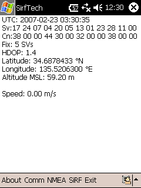
通信状態の表示何も表示されない場合は、「Comm」メニューをクリックして設定画面へ
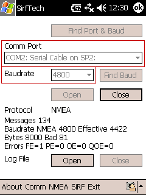
「Comm」メニューで開くことが出来る通信ポートの設定画面ポート番号（COM 2）、同期速度（4800bps）
通信ポートの設定は自動的に行われる。COM2, 4800bps となっていない場合、手動であわせることになる。
ここまでの操作では、まだSiRFモジュールに対して何の操作も行っていない。
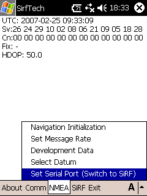
「NMEA － Set Serial Port」 メニューを開く
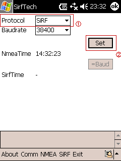
①のProtocol ： Sirf を確認して、②の Set ボタンを押した後、「Ok」を押して閉じる
ここからは引き返せません。SiRF GPS モジュールは、プログラム・モードに切り替わっています。NMEAデータを吐き出さないので、GarmapCEやSuper Mapple
Digitalでは利用できない状態です。
ここで「Exit」メニューをクリックして、SirfTechを終了する。10秒程度待ってから再びSirfTechを実行すると次のような画面になっているはずだ。
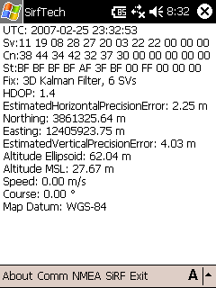
SiRFモードの出力画面
SiRF GPSモジュールの設定メニュー
"SiRFモード"に切り替えたときに、「SiRF」メニューを使用することが出来る。メニューの一番下にある「Switch to NMEA Protocol」で"NMEAモード"に戻ることが出来る。
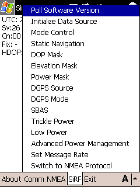
それぞれのメニューをクリックしたときに現れる設定ダイアログを示す。念のため、設定変更する前に全ての値を記録して、不具合がある場合戻せるようにしたほうがよいかも...。
■ Poll Software Version
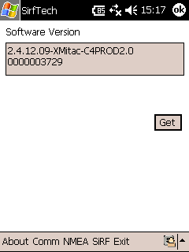
ファームウエアのバージョンが表示される。
私が所持しているMio168の場合
"2.4.12.09-XMitac-C4PROD2.0", "0000003729" となっている。
■ Initialize Data Source
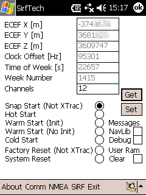
ECEF X,Y,Z ：
最後に取得された測地地点（現在地）
Time of Week [s] ： 現在の週の開始時刻からの経過秒
Week Number ： 1980/JAN/06 から数えた週
SiRFのリブートのモードを選択する
- Hot Start ：全てのデータ（現在地・現在時刻・エフェメリスデータ・アルマナックデータ）を保持したままリブートする
- Warm Start ：エフェメリスデータを消去してリブートする（現在地・現在時刻・アルマナックデータは保持）
- Cold Start ：現在地・現在時刻・エフェメリスデータ・アルマナックデータを消去してリブートする
ECEF座標系とは...
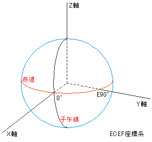
■ Mode Control
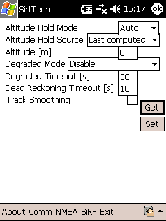
- Altitude Hold Mode ： 捕捉している衛星が4基未満になった場合の動作についての設定（高度データの固定）
- Degraded Mode ： 捕捉している衛星が3基未満になった場合の動作についての設定
方向、時間ドリフトのうち、どれを（最後に計測した値で）固定するかを選択できる。 - Dead Reckoning Timeout [s] ： 捕捉する衛星が全く無くなってから、どれだけの時間、最後に計測された方向と速度で推定位置を算出するかの設定
- Track Smoothing ： 軌跡がジグザグになるのを防ぎ、スムースに補正する機能（実際のGPSで得られた場所とずれても、軌跡をスムースに結ぶ）
GPSから得られた正直な場所が必要な場合は、OFFにすること。
■ Static Navigation
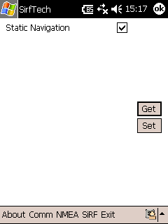
速度と前回の測地からの移動距離が"設定されたある値"以下になれば静止していると判断して、現在位置と進行方向を前回計測の値に固定するモード。
列車や自動車が停止したときに、位置がぶれるのを防ぐための機能。歩行者の場合はOFFにすると良いといわれている。
GPSから得られた正直な場所が必要な場合は、OFFにすること。
なお、"設定されたある値"を編集する画面は無い！
■ DOP Mask
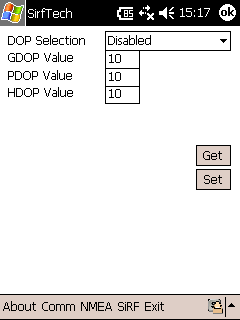
DOP（Dilution of Position）の設定
- Auto PDOP/HDOP ： 衛星が4基以上補足できればPDOPを、3基以下ならHDOPを用いる
- PDOP、HDOP、GDOP：それぞれのDOPを用いる
- Disabled：DOPによるデータ切捨てを行わない
それぞれのDOPの切捨てレベルを数値で入力する。DOPの値がこれ以上になれば、得られたデータは（不正確であるとして）切捨てられる。
※ DOPの意味
NAVSTAR衛星の見える方向が"かたまって"いる場合は、測地精度が落ちる。反対に天空のばらばらの位置に見えるほど測地精度が高まる。この"天空上で見える方向の密集具合"をDOPという数値で表す。
大きな値になるほど、衛星が密集して見える＝ 精度悪い
- HDOP：水平指標、VDOP：垂直指標、TDOP：時間指標、PDOP：=sqrt(HDOP^2+VDOP^2)
- GDOP：=sqrt(PDOP^2+TDOP^2)
■ Elevation Mask
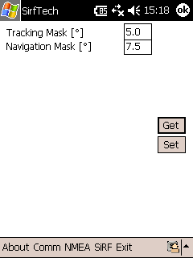
衛星の見える高度がここに設定した値以下になれば、受信データを切り捨てる。
■ Power mask
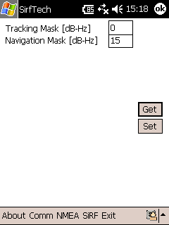
衛星から受信している電波の強度がここに設定した値以下になれば、受信データを切り捨てる。
■ DGPS Source
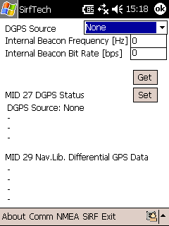
DGPSを使う場合の設定。ここで用いているGPSモジュールではSBASが使えないので、この設定画面では設定すべきものが無い。
DGPS Source の設定 ：
- None ： DGPSを利用しない（デフォルト）
- SBAS ： SBASを利用 （Mio168では無効）
- External RTCM ： 外部機器からDGPS用RTCM信号を入力
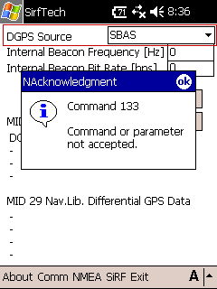
SBASを選択して「Set」ボタンを押すと、エラーが返ってくる。
■ DGPS Mode
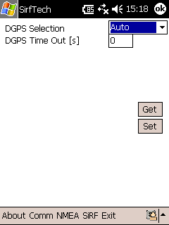
■ SBAS
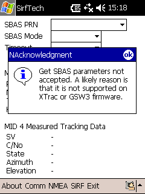
Mio168では、この機能はサポートされていない
参考までに、どのような電波を利用するか...
- WAAS ： アメリカ合衆国上空（太平洋・大西洋）の静止衛星から発信される信号を利用する
- EGNOS ： インド・欧州上空の静止衛星から発信される信号を利用する
- MSAS ： 日本の気象衛星ひまわり（運輸多目的衛星）から発信される信号を利用する
- GAGAN ： インドの静止衛星から発信される信号を利用する
■ Trickle Power
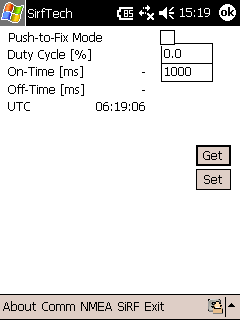
ユーザが電源を切っているときであっても、（バックグラウンドで）定期的に起動してエフェメリスデータを受信して更新するかどうかの設定。
- On-Time [ms] ： Trickle Power モードで（バックグラウンドで）起動したとき、ここで指定された時刻経過するとOFFとなる秒数（ミリ秒）
■ Low Power
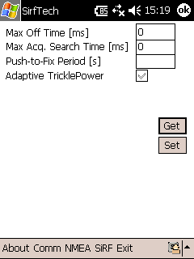
■ Advanced Power Management
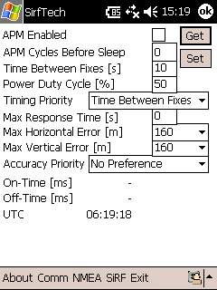
■ Set Message Rate
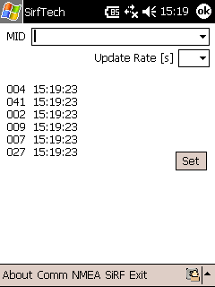
■ Switch to NMEA Protocol
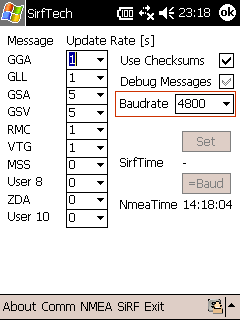
データを何秒ごとに出力するかの設定
- GGA ： 時刻と緯度・経度・高度（通常の測地）
- GLL ： 緯度・経度のみ
- GSA ： 捕捉している衛星番号とDOP値
- GSV ： 捕捉している衛星毎の仰角・方位・信号強度
- RMC ： 緯度・経度・進行方位・速度
- VTG ： 進行方位・速度
- MSS ： DGPS用MSK受信状況
- ZDA ： 時刻
例：「２」と設定すると、2秒に1回データを出力する。
- Debug Message ： 選択無効（チェックははずせない）
- Baudrate ： 通信速度（デフォルト4800bps）
※ 「Set」ボタンを押すことで、SiRFモードを抜けてNMEAモードに移る。モードの変更をした場合は、SirfTechの「Exit」ボタンを押して終了すること。
SiRFモードからNMEAモードに戻る
■ SiRF － Switch to NMEA Protocol メニュー
「Set」ボタンを押すことで、NMEAモードに戻ることが出来る。
ボタンを押す前に、Baudrate = 4800bps となっていることを確認すること。
カスタマイズした項目
mitac社のMio168でのカスタマイズ例を示す。
いろいろなパラメータをいじって動作確認したが、さすが工場出荷時のパラメータはよく調整されている。
■ Static Navigation
徒歩のときは Static Navigation = OFF、自動車など高速で移動するときに Static Navigation = ON というのが推奨値だと、ネット上のブログなどに書かれています。Static Navigation = ON では静止状態からの出発は 50mくらい移動しないと検知しないと書かれていました。
実際に設定を変えてテストしたところ、Static Navigation = ON では10mくらい歩かないと移動したと検知しないようです。10mなら許容範囲内なので、静止時にふらふらと現在地が動くよりはマシかと思い、Static Navigation = ON で使っています。
■ DOP Mask
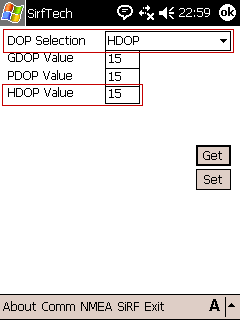
電源ON時（ナビ開始時）や、掩蔽物の近くに接近したときなどに軌跡が大きくジャンプするのは、DOP値で棄却を掛けるとうまく行きます。工場出荷時はDOP Mask = OFFですが、これをONにすると同時にしきい値を15としています。
15くらいなら、ビル街の間を自転車で走りぬける場合でも、ほとんど衛星をロストしなくて済んでいます。
■ データの出力頻度
データファイルが大きくなるので、1秒おきの出力は不要。2秒おきに変更しました。
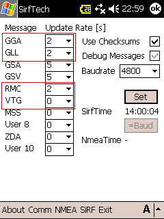
NMEA-0183 データ フォーマット
{kind=link}
図をクリックすると拡大します。
NMEA-0183フォーマットの説明 (http://bg66.soc.i.kyoto-u.ac.jp/forestgps/nmea.html)
NMEA data (http://www.gpsinformation.org/dale/nmea.htm)
実際のNMEA-0183フォーマットでの出力は...
$GPGSA,A,1,,,,,,,,,,,,,,,*1E
$GPGSV,3,1,11,26,69,318,37,29,67,359,27,24,65,271,36,10,52,080,24*72
$GPGSV,3,2,11,21,27,312,22,09,23,195,20,02,20,161,15,08,19,041,15*7A
$GPGSV,3,3,11,06,10,249,21,07,09,261,20,28,07,081,*4F
$GPGGA,090523.314,3441.4841,N,13530.1417,E,0,00,,111.9,M,,,,0000*2F
$GPGLL,3441.4841,N,13530.1417,E,090523.314,V,E*4D
$GPRMC,090523.314,V,3441.4841,N,13530.1417,E,,,280207,,,E*75
$GPGGA,090525.314,3441.4808,N,13530.1371,E,1,04,14.9,112.3,M,,,,0000*3D
$GPGLL,3441.4808,N,13530.1371,E,090525.314,A,A*52
$GPRMC,090525.314,A,3441.4808,N,13530.1371,E,10.50,258.55,280207,,,A*51
$GPGGA,090527.314,3441.4797,N,13530.1313,E,1,04,14.9,112.7,M,,,,0000*36
$GPGLL,3441.4797,N,13530.1313,E,090527.314,A,A*5D
$GPGSA,A,3,24,26,29,21,,,,,,,,,23.6,14.9,18.4*0E
$GPGSV,3,1,11,26,69,318,38,29,67,359,25,24,65,271,34,10,52,080,23*7A
$GPGSV,3,2,11,21,27,312,19,09,23,195,20,02,20,161,19,08,19,041,16*7D
$GPGSV,3,3,11,06,10,249,21,07,09,261,22,28,07,081,*4D
$GPRMC,090527.314,A,3441.4797,N,13530.1313,E,7.88,259.98,280207,,,A*6D
$GPGGA,090529.314,3441.4789,N,13530.1276,E,1,04,14.8,112.8,M,,,,0000*3B
$GPGLL,3441.4789,N,13530.1276,E,090529.314,A,A*5E
$GPRMC,090529.314,A,3441.4789,N,13530.1276,E,6.36,274.45,280207,,,A*65
$GPGGA,090531.314,3441.4791,N,13530.1225,E,1,04,14.8,112.8,M,,,,0000*3D
$GPGLL,3441.4791,N,13530.1225,E,090531.314,A,A*58
$GPRMC,090531.314,A,3441.4791,N,13530.1225,E,7.84,268.34,280207,,,A*60